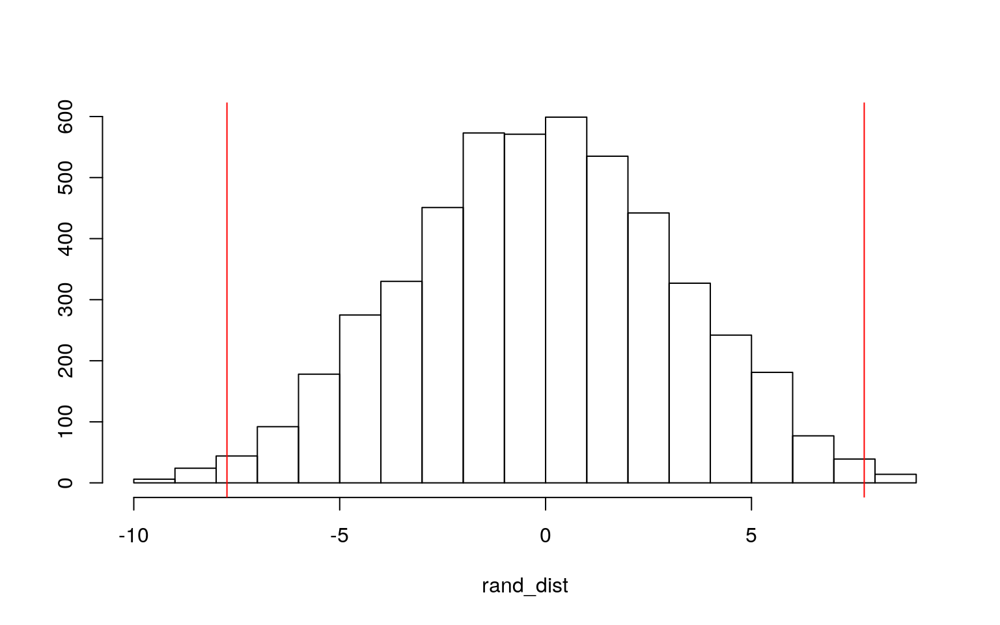
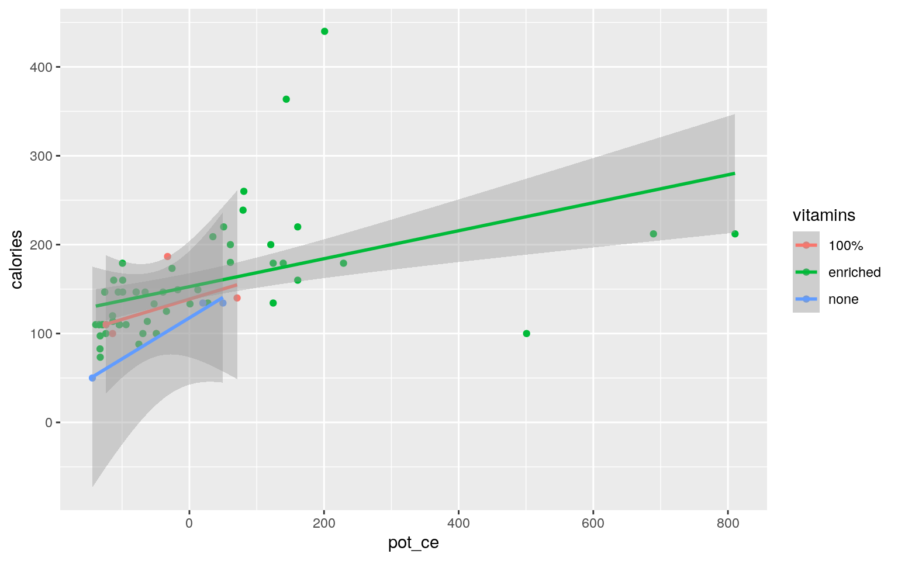
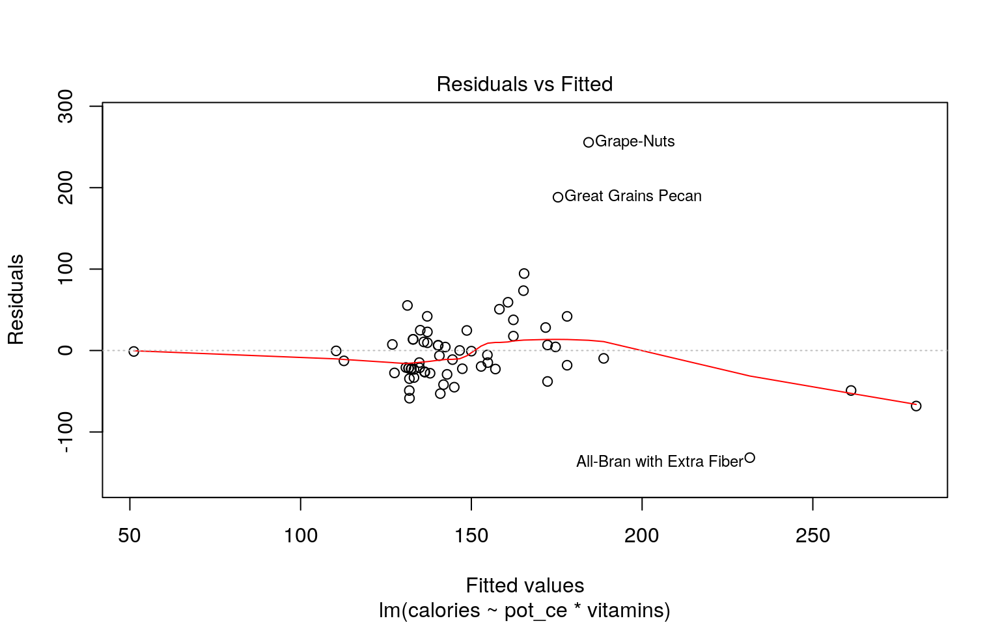
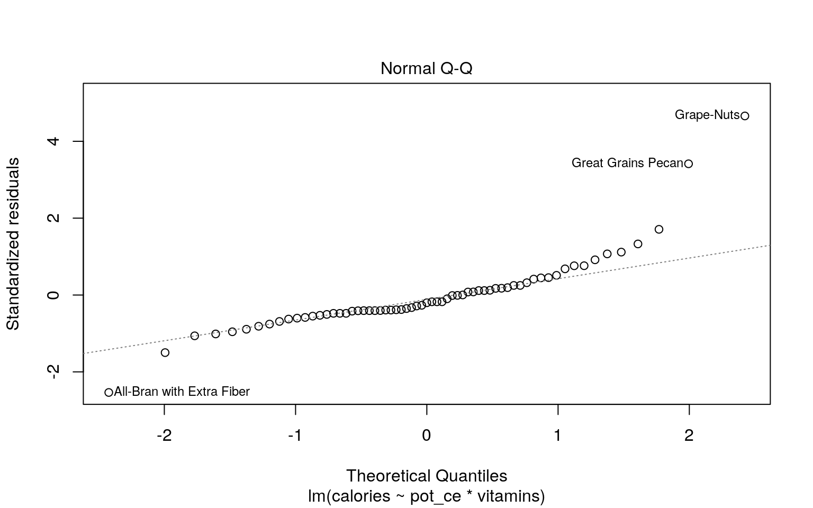
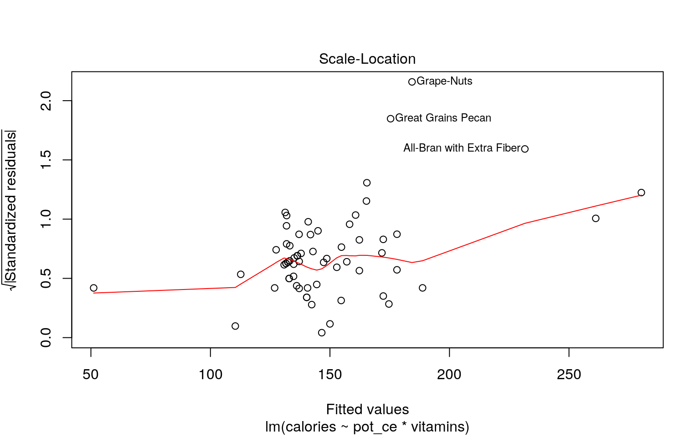
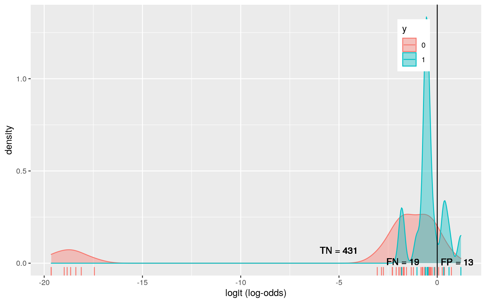
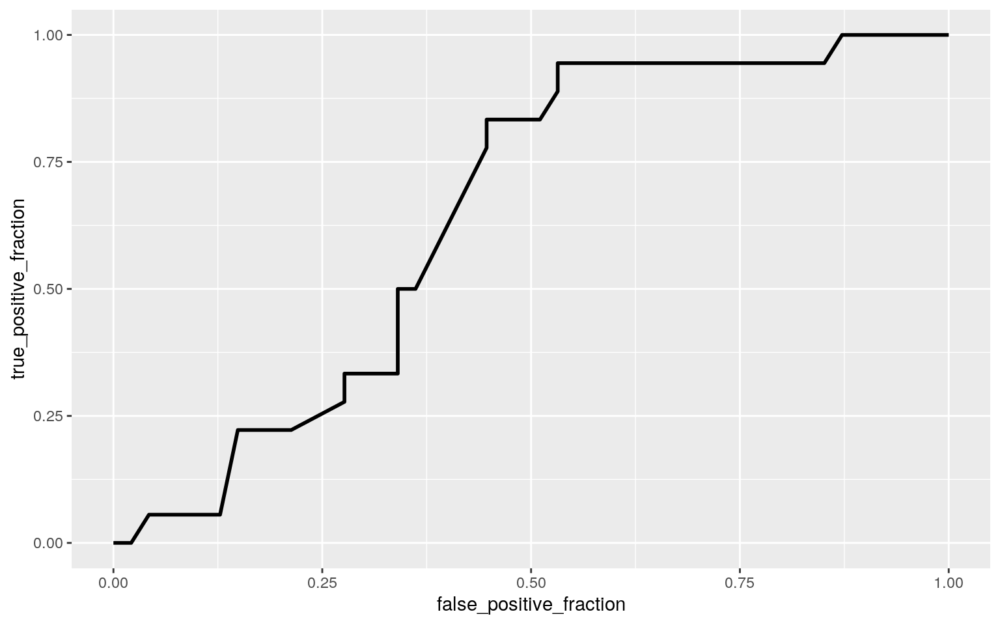

A knitted R Markdown document (preferably HTML) and the raw R Markdown file (as .Rmd) should both be submitted to Canvas by 11:59pm on the due date. These two documents will be graded jointly, so they must be consistent (i.e., don’t change the R Markdown file without also updating the knitted document). In the .Rmd file for Project 2, you can copy the first code-chunk into your project .Rmd file to get better formatting. Notice that you can adjust the opts_chunk$set(…) above to set certain parameters if necessary to make the knitting cleaner (you can globally set the size of all plots, etc). You can copy the set-up chunk in Project2.Rmd: I have gone ahead and set a few for you (such as disabling warnings and package-loading messges when knitting)!
Like before, I envision your written text forming something of a narrative structure around your code/output. All results presented must have corresponding code. Any answers/results/plots etc. given without the corresponding R code that generated the result will not be graded. Furthermore, all code contained in our project document should work properly. Please do not include any extraneous code or code which produces error messages. (Code which produces warnings is fine as long as you understand what the warnings mean.)
Find one dataset with at least 5 variables (ideally more!) that you want to use to build models/test hypotheses. At least one should be categorical (with 2-5 groups, ideally; definitely fewer than 10) and at least two should be numeric (taking on more than 10 distinct values). Ideally, at least of your variables will be binary (if not, you will have to create one by discretizing a numeric or collapsing levels of a categorical). You will need a minimum of 40 observations (at least 10 observations for every explanatory variable you have, ideally 20+ observations/variable).
It is perfectly fine to use either dataset (or the merged dataset, or a subset of your variables) from Project 1. However, I might encourage you to diversify things a bit and choose a different dataset to work with (particularly if the variables did not reveal interesting associations in Project 1 that you want to follow up with). The only requirement/restriction is that you may not use data from any examples we have done in class or lab. It would be a good idea to pick more cohesive data this time around (i.e., variables that you actually thing might have a relationship you would want to test). Think more along the lines of your Biostats project.
Again, you can use data from anywhere you want (see bottom for resources)! If you want a quick way to see whether a built-in (R) dataset has binary and/or character (i.e., categorical) variables, check out this list: https://vincentarelbundock.github.io/Rdatasets/datasets.html.
library(tidyverse)
library(lmtest)
library(sandwich)
library(dplyr)
library(ggplot2)
library(caret)library(MASS)
data(UScereal)
summary(UScereal)## mfr calories protein fat sodium fibre
## G:22 Min. : 50.0 Min. : 0.7519 Min. :0.000 Min. :
0.0 Min. : 0.000
## K:21 1st Qu.:110.0 1st Qu.: 2.0000 1st Qu.:0.000 1st
Qu.:180.0 1st Qu.: 0.000
## N: 3 Median :134.3 Median : 3.0000 Median :1.000 Median
:232.0 Median : 2.000
## P: 9 Mean :149.4 Mean : 3.6837 Mean :1.423 Mean :237.8
Mean : 3.871
## Q: 5 3rd Qu.:179.1 3rd Qu.: 4.4776 3rd Qu.:2.000 3rd
Qu.:290.0 3rd Qu.: 4.478
## R: 5 Max. :440.0 Max. :12.1212 Max. :9.091 Max.
:787.9 Max. :30.303
## carbo sugars shelf potassium vitamins
## Min. :10.53 Min. : 0.00 Min. :1.000 Min. : 15.00
100% : 5
## 1st Qu.:15.00 1st Qu.: 4.00 1st Qu.:1.000 1st Qu.: 45.00
enriched:57
## Median :18.67 Median :12.00 Median :2.000 Median : 96.59
none : 3
## Mean :19.97 Mean :10.05 Mean :2.169 Mean :159.12
## 3rd Qu.:22.39 3rd Qu.:14.00 3rd Qu.:3.000 3rd Qu.:220.00
## Max. :68.00 Max. :20.90 Max. :3.000 Max. :969.70The dataset being used for this projects is “UScereal” within the MASS package. Independent variables of interest include calories (number of calories in one portion), protein (grams of protein in one portion), fat (grams of fat in one portion), sodium (milligrams of sodium i one portion), fibre (grams of dietary fiber in one portion), carbo (grams of complex carbohydrates in one portion), and sugars (grams of sugars in one portion). The dependent variable of interest is mfr (manufacturer) that includes G=General Mills, K=Kellogs, N=Nabisco, P=Post, Q=Quaker Oats, and R=Ralston Purina. I am interested to know if there is a significant difference between manufacturer based on the components of each of the cereals they are producing. For example, does manufacturer A produce more cereals with greater fiber per portion and does manufacturer B produce more cereals with greater fat per portion? For the linear regression model I want to observe any differences in calories dependent on vitamins (categorical: 0, 25% or 100% fortified) and potassium content. I am interested to know whether the cereals provided to the general public have an increase in calories or decrease based on potassium (mineral) and vitamin content.The dichotomous variable to be used in future analyses will be a 0 or 1 with 1 being indicative of the cereal being placed on the second shelf. Manufacturers tend to prefer their products on shelves that sit at eye level for consumers to be more likely to purchase. I am interested to see if cereals that have greater sugar content are more prone to shelf 2 placement vs other cereals that are in shelves 1 or 3 which may be more “healthy”.
obj<-summary(manova(cbind(calories,protein,fat,sodium,fibre,carbo,sugars)~mfr,data=UScereal))
obj## Df Pillai approx F num Df den Df Pr(>F)
## mfr 5 0.92689 1.853 35 285 0.003506 **
## Residuals 59
## ---
## Signif. codes: 0 '***' 0.001 '**' 0.01 '*' 0.05 '.' 0.1
' ' 1#Based on the MANHOVA result it appears there is a mean difference across levels of the categorical variable manufacturer (mfr) (p=0.0035).
#summary.aov(obj)
pairwise.t.test(UScereal$calories, UScereal$mfr, p.adj = "none")##
## Pairwise comparisons using t tests with pooled SD
##
## data: UScereal$calories and UScereal$mfr
##
## G K N P Q
## K 0.529 - - - -
## N 0.555 0.781 - - -
## P 0.023 0.071 0.404 - -
## Q 0.950 0.653 0.589 0.091 -
## R 0.673 0.421 0.434 0.046 0.779
##
## P value adjustment method: nonepairwise.t.test(UScereal$protein, UScereal$mfr, p.adj = "none")##
## Pairwise comparisons using t tests with pooled SD
##
## data: UScereal$protein and UScereal$mfr
##
## G K N P Q
## K 0.189 - - - -
## N 0.011 0.053 - - -
## P 0.077 0.445 0.176 - -
## Q 0.650 0.719 0.060 0.387 -
## R 0.824 0.304 0.021 0.145 0.596
##
## P value adjustment method: nonepairwise.t.test(UScereal$fat, UScereal$mfr, p.adj = "none")##
## Pairwise comparisons using t tests with pooled SD
##
## data: UScereal$fat and UScereal$mfr
##
## G K N P Q
## K 0.14 - - - -
## N 0.45 0.99 - - -
## P 1.00 0.25 0.49 - -
## Q 0.86 0.27 0.45 0.87 -
## R 0.15 0.61 0.73 0.20 0.21
##
## P value adjustment method: nonepairwise.t.test(UScereal$sodium, UScereal$mfr, p.adj = "none")##
## Pairwise comparisons using t tests with pooled SD
##
## data: UScereal$sodium and UScereal$mfr
##
## G K N P Q
## K 0.95 - - - -
## N 0.19 0.18 - - -
## P 0.80 0.84 0.17 - -
## Q 0.56 0.53 0.47 0.48 -
## R 0.57 0.60 0.14 0.75 0.37
##
## P value adjustment method: nonepairwise.t.test(UScereal$fibre, UScereal$mfr, p.adj = "none")##
## Pairwise comparisons using t tests with pooled SD
##
## data: UScereal$fibre and UScereal$mfr
##
## G K N P Q
## K 0.0546 - - - -
## N 0.0012 0.0189 - - -
## P 0.1047 0.8932 0.0354 - -
## Q 0.9856 0.2272 0.0057 0.2408 -
## R 0.8035 0.3442 0.0093 0.3475 0.8344
##
## P value adjustment method: nonepairwise.t.test(UScereal$carbo, UScereal$mfr, p.adj = "none")##
## Pairwise comparisons using t tests with pooled SD
##
## data: UScereal$carbo and UScereal$mfr
##
## G K N P Q
## K 0.416 - - - -
## N 0.197 0.373 - - -
## P 0.052 0.186 0.976 - -
## Q 0.941 0.566 0.254 0.147 -
## R 0.223 0.472 0.792 0.757 0.311
##
## P value adjustment method: nonepairwise.t.test(UScereal$sugars, UScereal$mfr, p.adj = "none")##
## Pairwise comparisons using t tests with pooled SD
##
## data: UScereal$sugars and UScereal$mfr
##
## G K N P Q
## K 0.670 - - - -
## N 0.261 0.184 - - -
## P 0.244 0.404 0.086 - -
## Q 0.871 0.673 0.401 0.332 -
## R 0.078 0.045 0.795 0.018 0.206
##
## P value adjustment method: none#performed 1 MANOVA, 7 ANOVAs, and 105 t.tests which results in 113 hypothesis tests
typ1e <- 1-(.95^113)
alpha <- .05/113The results of the MANOVA suggest there is a mean difference across levels of the categorical variable, manufacturer.
There were significant differences between manufactueres and independent variables analyzed (met the criterion for significance p < 0.05). P was significantly different from G and R in calories, N was significantly differfent from G and R in protein, N was significantly different from G, K, P, Q and R in fibre, and R was significantly different from P and K in sugars.
We conducted one MANOVA, 7 ANOVAS, and 105 t tests which resulted in 113 total tests and therefore, the probability of at least one type 1 error is (1-.95^113) 0.997. We would need to use a bonferroni adjusted significance level of 0.0004 to continue to keep the overall type 1 error rate at .05. The MANOVA assumptions that we likely have not met may include homogeneity of variance (we cannot be sure that variances are equal between groups, there are some clear outliers), adequate sample size (the number of observations per group may be too little to detect a significant and reliable result), normality of residuals may also be violated in this analysis, and we cannot assume linearity.
#I am curious to see what the mean differences are between grams of sugar in one portion of cereal from two different manufacturers (Post and Ralston Purina). In the previous analysis it appeared significant and I would like to see if that difference in means remains true even after randomization.
P<- c(7.462687,14.925373,16.000000,17.045455,5.681818,12.000000,12.121212,8.270677,20.895522)
R <- c(8.955224,3.000000,6.666667,1.769912,4.477612)
cerealsug <-data.frame(company=c(rep("P",9),rep("R",5)),sugar=c(P,R))
head(cerealsug)## company sugar
## 1 P 7.462687
## 2 P 14.925373
## 3 P 16.000000
## 4 P 17.045455
## 5 P 5.681818
## 6 P 12.000000cerealsug%>%group_by(company)%>%
summarize(means=mean(sugar))%>%summarize(`mean_diff`=diff(means))## # A tibble: 1 x 1
## mean_diff
## <dbl>
## 1 -7.74#mean_diff is -7.737533
#randomization test on sugar in one portion of cereal between Post cereals and Ralston Purina cereals
rand_dist<-vector()
for(i in 1:5000){
new<-data.frame(sugar=sample(cerealsug$sugar),condition=cerealsug$company)
rand_dist[i]<-mean(new[new$condition=="P",]$sugar)-
mean(new[new$condition=="R",]$sugar)}
{hist(rand_dist,main="",ylab=""); abline(v = c(-7.737533, 7.737533),col="red")}
mean(rand_dist>7.737533 | rand_dist < -7.737533)## [1] 0.01#p-value of the probability of observing a mean difference as extreme as the one we got under the "randomization distribution" (p=0.0114).The null hypothesis of this test is that there will be no difference in means of sugar per one portion of cereal between Post and Ralston Purina cereals. The alternative would be that there is a signficiant difference in means between the sugar content per one portion of cereal between Post and Ralston Purina cereals. The randomization test does agree in this case. Performing a randomization test on the sugar variable and calculating the p-value for the permutation test reinforced earlier findings that the companies Post and Ralston purina do not have the same sugar content per portion in their cereals on average (p=0.0114).
#The variables chosen for the linear regression model include a dependent variable of calories and independent variables of potassium and vitamins and their interaction. It would be interesting to note whether the cereals provided to the general public have an increase in calories or decrease based on potassium (mineral) and vitamin content.
UScereal$pot_ce <- UScereal$potassium - mean(UScereal$potassium,na.rm=T)
fitcal<-lm(calories ~ pot_ce*vitamins, data=UScereal)
summary(fitcal)##
## Call:
## lm(formula = calories ~ pot_ce * vitamins, data =
UScereal)
##
## Residuals:
## Min 1Q Median 3Q Max
## -131.54 -26.34 -11.14 13.73 255.67
##
## Coefficients:
## Estimate Std. Error t value Pr(>|t|)
## (Intercept) 138.6719 30.6733 4.521 3.02e-05 ***
## pot_ce 0.2277 0.3570 0.638 0.526
## vitaminsenriched 14.0536 31.5552 0.445 0.658
## vitaminsnone -21.0255 45.5019 -0.462 0.646
## pot_ce:vitaminsenriched -0.0704 0.3591 -0.196 0.845
## pot_ce:vitaminsnone 0.2337 0.5203 0.449 0.655
## ---
## Signif. codes: 0 '***' 0.001 '**' 0.01 '*' 0.05 '.' 0.1
' ' 1
##
## Residual standard error: 55.9 on 59 degrees of freedom
## Multiple R-squared: 0.2604, Adjusted R-squared: 0.1977
## F-statistic: 4.154 on 5 and 59 DF, p-value: 0.002668- Interpret the coefficient estimates (do not discuss significance) (10)Ignoring significance: The predicted value of calories is 138.6719 when both pot_ce and vitamins have values of 0. The slope for pot_ce on calories is 0.2277 while holding the variable vitamins constant meaning for every 1 unit increase in pot_ce, calories will increase by 0.2277. The slope for vitaminsenriched on calories is 14.0536 while holding pot_ce and vitaminsnone constant meaning for every 1 unit increase in vitaminsenriched, calories will increase by 14.0536. The slope for vitaminsnone on calories is -21.0255 while holding pot_ce and vitaminsenriched constant meaning for every 1 unit increase in vitaminsnone, calories will decrease by 21.0255. Slope of pot_ce by vitaminsenriched on calories is -0.0704 and slope of pot_ce by vitaminsnone on calories is 0.2337.
- Plot the regression using `ggplot()` using geom_smooth(method="lm"). If your interaction is numeric by numeric, refer to code in the slides to make the plot or check out the `interactions` package, which makes this easier. If you have 3 or more predictors, just chose two of them to plot for convenience. (10)UScereal %>% ggplot(aes(pot_ce, calories, color=vitamins)) + geom_point()+geom_smooth(method="lm") - What proportion of the variation in the outcome does your model explain? (4) The variables chosen to predict calories (potassium and vitamins) in UScereal do not explain a significant amount of variation in calories. Since neither potassium or vitamins are significant we cannot assume that the slope of each line is different from horizontal, and therefore, we cannot reject the null hypothesis.
- Check assumptions of linearity, normality, and homoskedasticity either graphically or using a hypothesis test (5)When testing for linearity it is ideal to have no fitted pattern in the residual plot. We would like to see the red line in a horizontal orientation, but it doesn’t appear the data tested fit this parameter, and this indicates we may have a problem with the linear model.
#Testing for linearity of the data
plot(fitcal,1) It is ideal for a plot reflecting normality of the data to follow the dotted line. It is clear we have some notable outliers in this data (all-bran with extra fiber, great grains pecan, and grape-nuts). For future analysis we may want to exclude them from the model to minimize their influence on the variation and distrubtion of the model.
#Testing for normality of the data
plot(fitcal,2) When testing for homoskedasticity of the data it is ideal that the residuals tend to spread equally along the range of predictors. In fact, the variability of the points plotted increase with the value of the fitted outcome variable which may mean that we have non-constant variances in the residuals errors and therefore, presence of homoskedasticity. Moving forward we may need to log transform the data.
#Testing for homoskedasticity of the data
plot(fitcal,3)
- Regardless, recompute regression results with robust standard errors via coeftest(..., vcov=vcovHC(...)). Discuss significance of results, including any changes from before/after robust SEs if applicable. (10)
After recomputing the regression model with robust standard errors there are no observed changes before/after robust SEs. Additionally, after adjusting there is still no significant effect of pot_ce, vitamins or their interactions on the outcome variable, calories.
summary(fitcal)##
## Call:
## lm(formula = calories ~ pot_ce * vitamins, data =
UScereal)
##
## Residuals:
## Min 1Q Median 3Q Max
## -131.54 -26.34 -11.14 13.73 255.67
##
## Coefficients:
## Estimate Std. Error t value Pr(>|t|)
## (Intercept) 138.6719 30.6733 4.521 3.02e-05 ***
## pot_ce 0.2277 0.3570 0.638 0.526
## vitaminsenriched 14.0536 31.5552 0.445 0.658
## vitaminsnone -21.0255 45.5019 -0.462 0.646
## pot_ce:vitaminsenriched -0.0704 0.3591 -0.196 0.845
## pot_ce:vitaminsnone 0.2337 0.5203 0.449 0.655
## ---
## Signif. codes: 0 '***' 0.001 '**' 0.01 '*' 0.05 '.' 0.1
' ' 1
##
## Residual standard error: 55.9 on 59 degrees of freedom
## Multiple R-squared: 0.2604, Adjusted R-squared: 0.1977
## F-statistic: 4.154 on 5 and 59 DF, p-value: 0.002668coeftest(fitcal, vcov = vcovHC(fitcal))##
## t test of coefficients:
##
## Estimate Std. Error t value Pr(>|t|)
## (Intercept) 138.671907 36.660828 3.7826 0.0003648 ***
## pot_ce 0.227744 0.360640 0.6315 0.5301520
## vitaminsenriched 14.053608 37.453480 0.3752 0.7088362
## vitaminsnone -21.025509 41.088681 -0.5117 0.6107636
## pot_ce:vitaminsenriched -0.070399 0.366901 -0.1919
0.8484994
## pot_ce:vitaminsnone 0.233665 0.588575 0.3970 0.6927994
## ---
## Signif. codes: 0 '***' 0.001 '**' 0.01 '*' 0.05 '.' 0.1
' ' 1#bootstrap SE of the slope by resampling observations with replacement
samp_distn<-replicate(5000, {
boot_dat<-boot_dat<-UScereal[sample(nrow(UScereal),replace=TRUE),]
fit<-lm(calories ~ pot_ce, data=boot_dat)
coef(fit) })
#estimated SEs
samp_distn%>%t%>%as.data.frame%>%summarize_all(sd)## (Intercept) pot_ce
## 1 7.461562 0.08410314cereal<-UScereal%>%mutate(y=ifelse(shelf=="2",1,0))
head(cereal)## mfr calories protein fat sodium fibre carbo sugars shelf
potassium vitamins
## 1 N 212.1212 12.121212 3.030303 393.9394 30.303030
15.15152 18.18182 3 848.48485 enriched
## 2 K 212.1212 12.121212 3.030303 787.8788 27.272727
21.21212 15.15151 3 969.69697 enriched
## 3 K 100.0000 8.000000 0.000000 280.0000 28.000000
16.00000 0.00000 3 660.00000 enriched
## 4 G 146.6667 2.666667 2.666667 240.0000 2.000000
14.00000 13.33333 1 93.33333 enriched
## 5 K 110.0000 2.000000 0.000000 125.0000 1.000000
11.00000 14.00000 2 30.00000 enriched
## 6 G 173.3333 4.000000 2.666667 280.0000 2.666667
24.00000 10.66667 3 133.33333 enriched
## pot_ce y
## 1 689.36510 0
## 2 810.57722 0
## 3 500.88025 0
## 4 -65.78642 0
## 5 -129.11975 1
## 6 -25.78642 0gfitc<-glm(y~mfr+sugars, data=cereal, family= binomial (link="logit"))
coeftest(gfitc)##
## z test of coefficients:
##
## Estimate Std. Error z value Pr(>|z|)
## (Intercept) -2.048560 0.843889 -2.4275 0.01520 *
## mfrK -0.039714 0.681872 -0.0582 0.95356
## mfrN -17.594543 3371.024698 -0.0052 0.99584
## mfrP -1.689798 1.196963 -1.4117 0.15803
## mfrQ 1.319343 1.075853 1.2263 0.22008
## mfrR -17.146009 2885.480483 -0.0059 0.99526
## sugars 0.120798 0.062110 1.9449 0.05179 .
## ---
## Signif. codes: 0 '***' 0.001 '**' 0.01 '*' 0.05 '.' 0.1
' ' 1exp(coef(gfitc))## (Intercept) mfrK mfrN mfrP mfrQ mfrR sugars
## 1.289204e-01 9.610643e-01 2.284478e-08 1.845567e-01
3.740962e+00 3.577527e-08 1.128397e+00- Interpret coefficient estimates in context (10)The effect of mfr (each independently tested) or sugars does not have a significant effect on the outcome of shelf. Independent of significance, It is 0.961 times more likely that Kelloggs will be placed on the 2nd shelf, 0.000000023 times more likely that Nabisco will be placed on the second shelf, .185 that Post will be placed on the 2nd shelf, 3.74 times more likely that Quaker Oats will be placed on the 2nd shelf, .000000036 times more likely that Ralston Purina will be placed on the 2nd shelf, and 1.13 times more likely that cereals with sugars will be placed on the 2nd shelf. - Report a confusion matrix for your logistic regression (5)
probs<-predict(gfitc,type="response")
table(predict=as.numeric(probs>.5),truth=cereal$y)%>%addmargins## truth
## predict 0 1 Sum
## 0 43 14 57
## 1 4 4 8
## Sum 47 18 65- Compute and discuss the Accuracy, Sensitivity (TPR), Specificity (TNR), Precision (PPV), and AUC of your model (5)ACC<-(4+43)/65
TPR<-4/18
TNR<-43/47
PPV<-4/8library(knitr)
opts_chunk$set(fig.align="center", fig.height=5, message=FALSE, warning=FALSE, fig.width=8, tidy.opts=list(width.cutoff=60),tidy=TRUE)
class_diag<-function(probs,truth){
tab<-table(factor(probs>.5,levels=c("FALSE","TRUE")),truth)
acc=sum(diag(tab))/sum(tab)
sens=tab[2,2]/colSums(tab)[2]
spec=tab[1,1]/colSums(tab)[1]
ppv=tab[2,2]/rowSums(tab)[2]
if(is.numeric(truth)==FALSE & is.logical(truth)==FALSE) truth<-as.numeric(truth)-1
#CALCULATE EXACT AUC
ord<-order(probs, decreasing=TRUE)
probs <- probs[ord]; truth <- truth[ord]
TPR=cumsum(truth)/max(1,sum(truth))
FPR=cumsum(!truth)/max(1,sum(!truth))
dup<-c(probs[-1]>=probs[-length(probs)], FALSE)
TPR<-c(0,TPR[!dup],1); FPR<-c(0,FPR[!dup],1)
n <- length(TPR)
auc<- sum( ((TPR[-1]+TPR[-n])/2) * (FPR[-1]-FPR[-n]) )
data.frame(acc,sens,spec,ppv,auc)
}
class_diag(probs,cereal$y)## acc sens spec ppv auc
## 1 0.7230769 0.2222222 0.9148936 0.5 0.7440898The sensitivity or the ability of detecting a cereal placed on shelf 2 is relatively low. However, the probability of detecting a true negative or cereal that will not be placed on the 2nd shelf could be considered “good”. The accuracy of classifying the cereals on the second shelf of the total cereals classified is fair, and the precision is sacrificed a little with a less than ideal score of 0.5. The model is predicting cereals placed on the second shelf relatively fairly (0.744). - Using ggplot, make a density plot of the log-odds (logit) colored/grouped by your binary outcome variable (5)
cereal$logit <- predict(gfitc, type = "link") #get log-odds for everyone
cereal %>% mutate(y = as.factor(y)) %>% ggplot() + geom_density(aes(logit,
color = y, fill = y), alpha = 0.4) + theme(legend.position = c(0.85,
0.85)) + geom_vline(xintercept = 0) + xlab("logit (log-odds)") +
geom_rug(aes(logit, color = y)) + geom_text(x = -5, y = 0.07,
label = "TN = 431") + geom_text(x = -1.75, y = 0.008, label = "FN = 19") +
geom_text(x = 1, y = 0.006, label = "FP = 13") + geom_text(x = 5,
y = 0.04, label = "TP = 220")
- Generate an ROC curve (plot) and calculate AUC (either manually or with a package); interpret (5)library(plotROC)
ROCplot1 <- ggplot(gfitc) + geom_roc(aes(d = y, m = sugars),
n.cut = 0)
ROCplot1
calc_auc(ROCplot1)## PANEL group AUC
## 1 1 -1 0.6459811Based on the ROC curve it appears that this may be a less accurate test to detect the trade-off between sensitivity and specificity. The AUC value reflects a similar result as if falls under .7 which is considered fpoor, and potentially anything less would be a bad representation of the model.
6. (25 pts) Perform a logistic regression predicting the same binary response variable from ALL of the rest of your variables (the more, the better!)
fit8 <- glm(y ~ mfr + sugars + calories + protein + fat + sodium +
fibre + carbo, data = cereal, family = binomial(link = "logit"))
coeftest(fit8)##
## z test of coefficients:
##
## Estimate Std. Error z value Pr(>|z|)
## (Intercept) 1.8946e+00 2.5405e+00 0.7458 0.45580
## mfrK 3.3768e+00 1.6648e+00 2.0283 0.04253 *
## mfrN -7.2641e+00 4.2707e+03 -0.0017 0.99864
## mfrP -3.3882e+00 2.3378e+00 -1.4493 0.14725
## mfrQ 1.5005e+00 1.7702e+00 0.8477 0.39662
## mfrR -1.4586e+01 4.3173e+03 -0.0034 0.99730
## sugars 9.0758e-01 4.9440e-01 1.8357 0.06640 .
## calories -1.6169e-01 1.1044e-01 -1.4642 0.14315
## protein 2.0102e-01 6.1675e-01 0.3259 0.74448
## fat 2.3339e+00 1.3620e+00 1.7135 0.08662 .
## sodium -2.1416e-03 6.9404e-03 -0.3086 0.75765
## fibre -7.3502e-01 4.3364e-01 -1.6950 0.09007 .
## carbo 3.8827e-01 4.6785e-01 0.8299 0.40659
## ---
## Signif. codes: 0 '***' 0.001 '**' 0.01 '*' 0.05 '.' 0.1
' ' 1exp(coef(fit8))## (Intercept) mfrK mfrN mfrP mfrQ mfrR sugars
## 6.650179e+00 2.927561e+01 7.002178e-04 3.377049e-02
4.483937e+00 4.628045e-07 2.478330e+00
## calories protein fat sodium fibre carbo
## 8.507014e-01 1.222647e+00 1.031773e+01 9.978607e-01
4.794938e-01 1.474427e+00probs8 <- predict(fit8, type = "response")
class_diag(probs8, cereal$y)## acc sens spec ppv auc
## 1 0.8461538 0.6666667 0.9148936 0.75 0.9515366Overall, adding in the remainder of the variables allowed the model to be a better predictor of shelf 2 cereals. Both sensitivity and specificity have increased from the previous model that included only mfr and sugars. The AUC has now reached a level considered good and very close to 1, indicating this as an improved model overall for accurate predictions.
- Perform 10-fold (or repeated random sub-sampling) CV with the same model and report average out-of-sample classification diagnostics (Accuracy, Sensitivity, Specificity, Precision, and AUC); interpret AUC and compare with the in-sample metrics (10)set.seed(1234)
k = 6
data <- cereal[sample(nrow(cereal)), ]
folds <- cut(seq(1:nrow(cereal)), breaks = k, labels = F)
diags <- NULL
for (i in 1:k) {
train <- data[folds != i, ]
test <- data[folds == i, ]
truth <- test$y
fit <- glm(y ~ sugars, data = train, family = "binomial")
probs <- predict(fit, newdata = test, type = "response")
diags <- rbind(diags, class_diag(probs, truth))
}
summarize_all(diags, mean)## acc sens spec ppv auc
## 1 0.6651515 0 0.9111111 NaN 0.6333333Interestingly, a k=6 is the only value to which the command will run without an “subscript out of bounds” error. This may have occurred due to the factor variable of y that has a low number of instances (shelf 2). However, this model has captured true negatives very well (which we observed previously). Accuracy and precision are low or not existent. The AUC level can be classified as poor. This model is not predictive of the outcome variable of interest, shelf.
- Perform LASSO on the same model/variables. Choose lambda to give the simplest model whose accuracy is near that of the best (i.e., lambda.1se). Discuss which variables are retained. (5)
library(glmnet)
set.seed(1234)
y <- as.matrix(cereal$y)
x <- model.matrix(y ~ ., data = cereal)[, -1]
x <- scale(x)
cv <- cv.glmnet(x, y, family = "binomial")
lasso <- glmnet(x, y, family = "binomial", lambda = cv$lambda.1se)
coef(lasso)## 19 x 1 sparse Matrix of class "dgCMatrix"
## s0
## (Intercept) -1.14382467
## mfrK .
## mfrN .
## mfrP -0.00757971
## mfrQ 0.07971749
## mfrR .
## calories .
## protein -0.56732879
## fat .
## sodium .
## fibre .
## carbo -0.46335845
## sugars 0.25165350
## shelf .
## potassium .
## vitaminsenriched 0.12251317
## vitaminsnone .
## pot_ce .
## logit 0.10010983The variables retained after performing lasso include the manufacturers P=Post, Q=Quaker Oats, protein, carbo, sugars, and vitaminsenriched. - Perform 10-fold CV using only the variables lasso selected: compare model’s out-of-sample AUC to that of your logistic regressions above (5)
set.seed(1234)
k = 6
data1 <- cereal[sample(nrow(cereal)), ]
folds <- cut(seq(1:nrow(cereal)), breaks = k, labels = F)
diags <- NULL
for (i in 1:k) {
train <- data1[folds != i, ]
test <- data1[folds == i, ]
truth <- test$y
fit <- glm(y ~ ., data = train, family = "binomial")
probs <- predict(fit, newdata = test, type = "response")
diags <- rbind(diags, class_diag(probs, truth))
}
diags %>% summarize_all(mean)## acc sens spec ppv auc
## 1 0.7378788 0.6555556 0.7814815 0.5472222 0.7314815Once again reducing the folds to a k=6 allows the model to run. This may still be attributed to the limited amount of the outcome variable being true across the dataset. Interestingly, after including the variables in the model that lasso selected it appears that the model is more predictive of what the truth is for the outcome of interest. This is particularly highlighted by the increase in AUC. We can now say this model is a “fair” predictor of the true outcome.
…